Manrope
The main family. Weight 400 for body, weight 600 for headings. A complete variable font, weights 200 to 800.
a small studio, a clear signature
The essentials for making things feel like ejmlabs. Original artwork, quiet color, clear type, and a wider set of parts for what comes next.
logo
The fancy e and the full lowercase name form the complete logo. These vectors preserve the drawing recovered directly from the source guide.

Primary
Solid Ink

Reversed Paper
Half the symbol height around the full logo. One quarter of the symbol width around a standalone symbol.
The guide shows a 180 px logo and a 24 px symbol. Use the dedicated 16 px export for browser tabs. Get the favicon.
color
A quiet palette with enough range for products, documentation and experiments. Select a swatch to copy its exact hex value.
All four pairs pass WCAG AA for normal text. Sage on Paper is 2.75:1, so use it for logo art and decoration. White is a utility color, not part of the palette.
typography
Manrope carries the message. IBM Plex Mono adds a precise, technical note. Use sentence case, light layouts and generous line spacing.
The main family. Weight 400 for body, weight 600 for headings. A complete variable font, weights 200 to 800.
The technical note. Use it for names, code, versions and hex values, such as project: ejmlabs.
motifs
Choose a graphic family to suit the message. Each comes in Forest and Paper, with editable SVGs and 1600 × 900 PNGs.
The original guide invites cropping and repeating the symbol. These kit extensions, new in v1.1.0, build on that idea with a restrained mathematical language. The source palette, logo drawing and clear-space rules still apply.
Use a close view of the original symbol for a cover, section opener or quiet brand backdrop. Pair it with a complete logo in a separate, clear area.
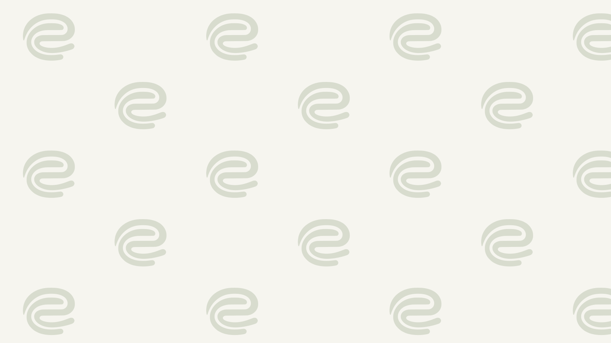
Repeated forms bring rhythm to a launch graphic or divider. Keep repetition away from body copy, and give the identifying logo its own space.
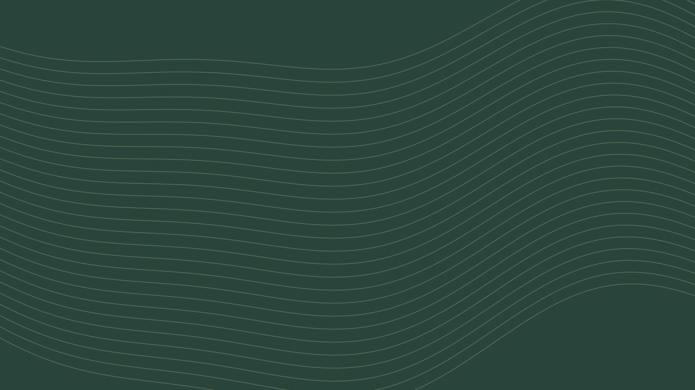
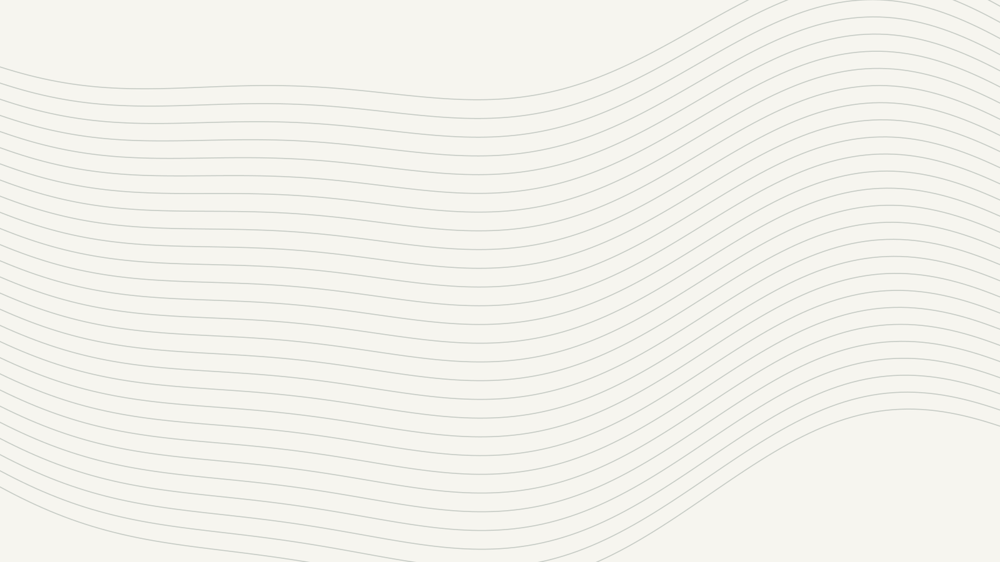
Continuous paths suggest progress and exploration. Use them on wide covers or image-free project posts, with copy set in the open part of the composition.
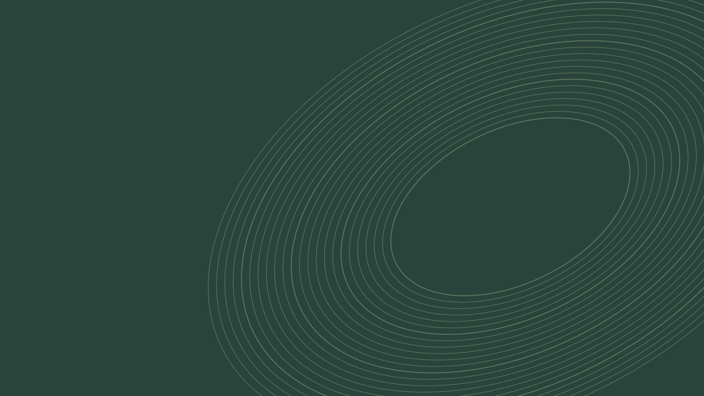
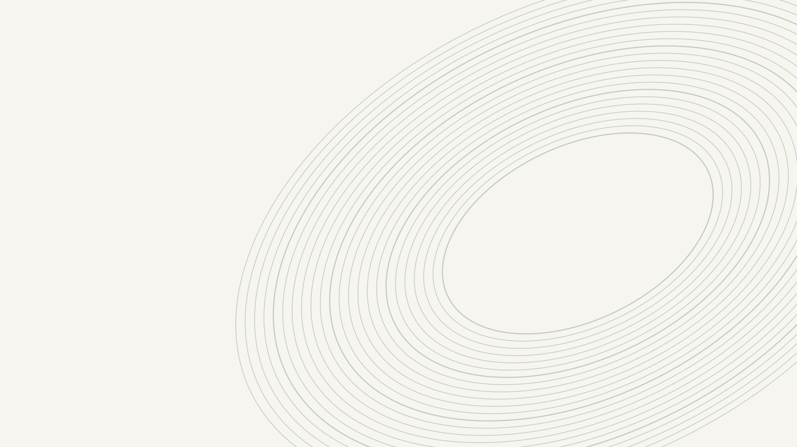
Elliptical paths suit experiments, research and connected ideas. Use as a graphic accent. These decorative paths carry no scientific measurements.
Use one motif family per composition and leave generous open space. Keep decoration out of reading areas. Preserve the six source colors, using Ink or Forest on light surfaces and Paper on Forest for text. Read the motif guide.
lockups and templates
Signature lockups and editable layouts make everyday brand work easier. Replace sample copy and images with your own, then export the finished artwork as a PNG for sharing.
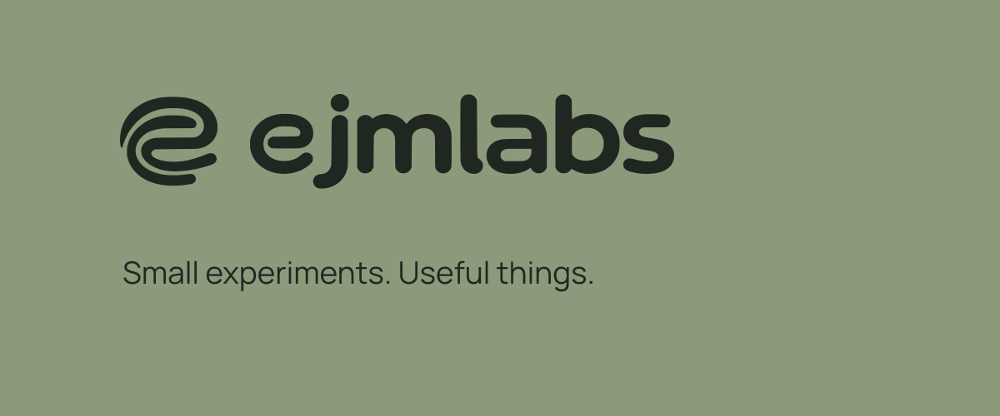
Signature lockup on Sage
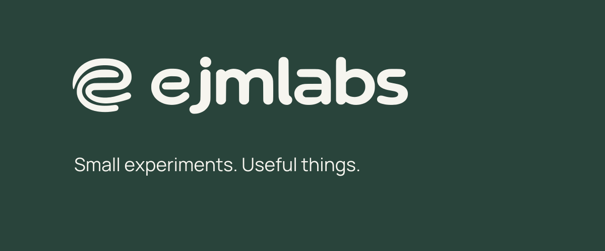
Signature lockup on Forest
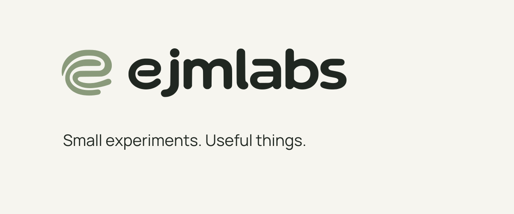
Signature lockup on Paper
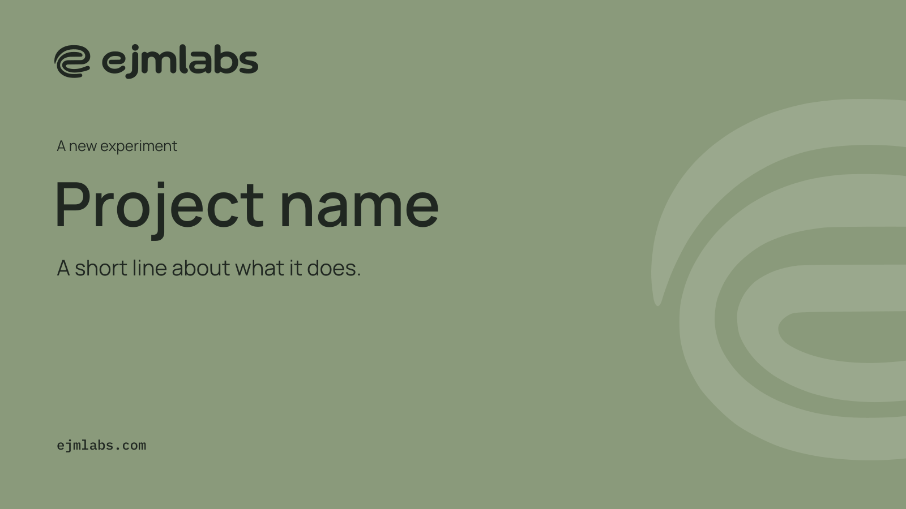
Introduce a release or experiment. Give one idea the headline and use the short description for useful context. Also in Forest.
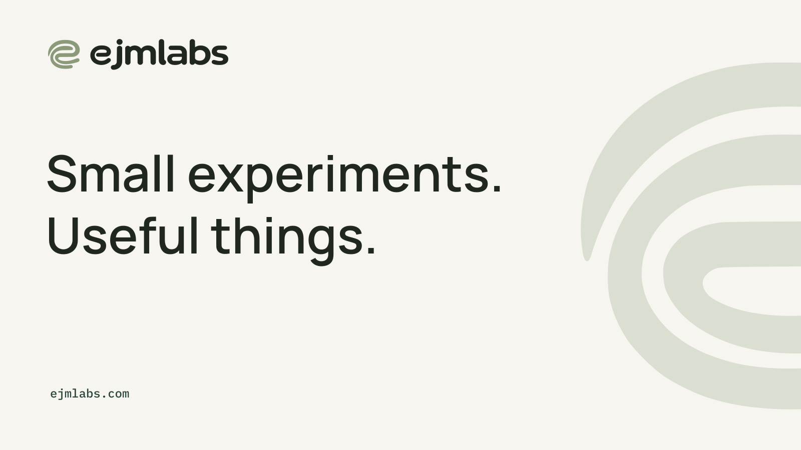
The studio signature pairs with a cropped symbol. Use it as supplied, or replace the phrase with a short thought that fits the open layout.
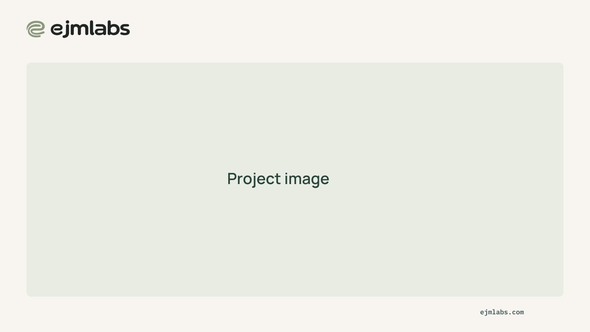
Let a screenshot or project image lead. Preserve the surrounding signature area and keep copy outside the image.
Lockups and templates are kit additions, not source-guide pages. The included logos preserve the original vector drawing. All three templates export at 1600 × 900 px.
icons and components
A small web vocabulary and a consistent icon set extend the identity to interfaces. The specimens use local fonts and the existing brand tokens.
Reusable controls, labels, forms and content patterns carry the palette and typography into product work. The specimen under See it working shows the supplied parts and their states.
The page shell every ejmlabs website uses: hero, bands, project cards, principles and footer. Copy the starter and write no CSS of your own.
One dark and light theme for desktop, web and terminal apps, with generators for CSS, Rust, Monaco and terminal emulators. The specimen under See it working shows an IDE and a terminal app in both themes.
A matching set of functional SVGs for navigation and actions. Use them alongside clear labels. The ejmlabs symbol remains the studio's identifying mark.
see it working
The specimens are real pages built from the kit. Open one to try the parts, switch the theme or resize the window.
applications and files
Prepared exports keep the studio signature consistent, from a tiny browser tab to a shared link. Keep both original font licenses with the fonts.
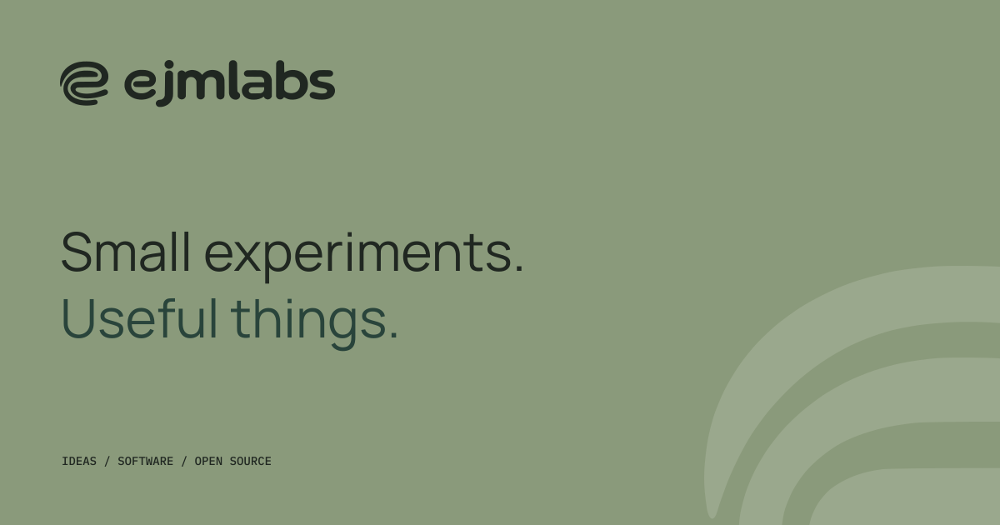
Social card
Avatar
web foundation
The guide supplies the identity. A few added web settings help it behave well on a screen. They are labeled in the token files and review notes.
A 4 px spacing foundation, three corner radii and a 1200 px reading canvas provide a quiet starting point. Keep the original clear space around the signature.
A slow 32-second ambient cycle sets the pace. Respect reduced motion, pause hidden pages and keep canvas resolution bounded. The composition should feel considered at rest.